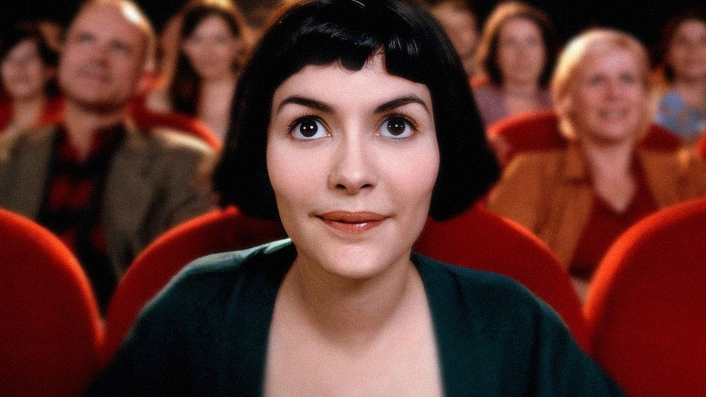

Интересные факты о фильме «Амели»
- Большинство сцен фильма сняты в районе Монмартр, Париж.
- Оригинальное французское название: Le Fabuleux Destin d'Amélie Poulain.
- Фильм был номинирован на 5 премий «Оскар».
- Саундтрек написал Ян Тьерсен — он стал культовым.
- Фильм вдохновил появление тематических кафе по всему миру.
- Вся атмосфера картины построена на ретро-цветах: изумрудно-зелёный, бордовый, тёплый жёлтый и золотой.
